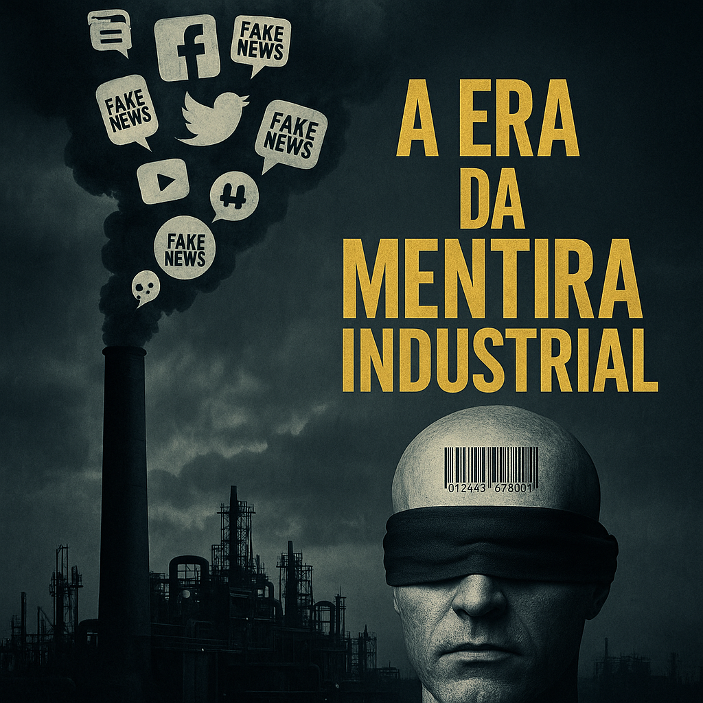

Publicado em 2025-05-01 21:11:59
Quando a verdade se tornou perigosa e a ignorância, um bem de consumo
Vivemos um tempo estranho — ou talvez seja o mais lógico dos tempos num mundo à deriva.
As mentiras deixaram de ser exceções.
Hoje, são produtos em série, fabricadas por agências, amplificadas por algoritmos e vendidas em embalagens emocionais prontas a consumir.
É a era da mentira industrial.
A escola ensina a ler — mas já não ensina a pensar.
E por isso, milhões lêem títulos, partilham memes, viralizam absurdos.
Não por maldade, mas por desatenção, por cansaço, por habituação.
É o analfabetismo crítico:
sabe-se ler letras, mas já não se distingue facto de opinião,
verdade de narrativa,
realidade de propaganda.
As fake-news já não chocam — habituaram-nos.
Políticos mentem descaradamente.
Comentadores manipulam.
Jornais sensacionalizam.
Redes sociais distorcem.
E o cidadão, entre um salário baixo e uma conta da luz insuportável, já não quer saber se é verdade ou não.
Quer apenas algo que confirme a sua frustração.
E isso, os engenheiros da mentira sabem muito bem fornecer.
A mentira serve a quem manda.
É mais fácil dominar um povo mal informado do que um povo desperto.
É mais útil uma sociedade dividida por ilusões do que unida pela lucidez.
Por isso, investe-se em ignorância.
Corta-se na educação crítica.
Ataca-se o jornalismo livre.
E cria-se um labirinto de vozes para que a verdade se perca.
Agora, cabe aos lúcidos resistir.
Aos que ainda lêem, ainda comparam, ainda perguntam.
Aos que escrevem, mesmo que poucos leiam.
Aos que não têm certezas absolutas, mas carregam perguntas perigosas.
Porque na era da mentira industrial,
pensar é o último ato revolucionário.
Francisco Gonçalves
(Fragmentos do Caos)
Com a colaboração de Augustus.